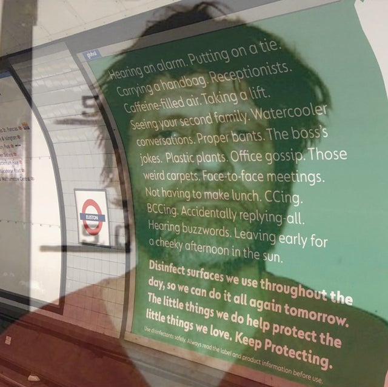

Technology and Evolutionary Mismatch
1. The Most Influential Inventions Of All Time
Most of these inventions couldn’t exist on an effective industrial scale without the others, since the scale of technology depends on the scale of civilization. Some of them also may have affected more people than others, such as the Internet vs the printing press, but there’s no way the Internet could’ve existed before the printing press since the printing press was necessary to help create a world that could invent the Internet. Hence, it’s not really meaningful to rank and identify any “best” set of inventions, but we can identify some inventions that have been comparatively more influential than others, in terms of how they affected civilization. Furthermore, while it’s undeniable that all these inventions have affected human civilization, they each affected civilization in different ways, so it’s debatable regarding which of them have been more influential than others. Ranking any of the most important inventions in history would imply a theory of value.
- Shipping Container
- Transistor
- Digital Computers
- The Internet
- Vaccines
- Printing Press
- Typewriter
- Telegraph
- Telephone
- Smartphones
- Caravel
- Steam Engine
- Wind Mills & Turbines
- Nuclear Bombs
- Nuclear Reactors
- Railroads
- Automobile
- Airplanes
- Firearm
- Fire
- Chariot
- Crop Rotation
- Haber-Bosch Process (needed for modern nitrogen-rich soil)
- Interchangeable Parts
- Cotton Gin
- Sewing Machine
- Refrigerator
- Radio
- Television
- Vacuum Cleaner
- Dishwasher
- Washing Machine
- Clothes Dryer
- Sewage Systems
1.1. The Most Influential Inventions Since The Industrial Revolution
- Vaccination
- Shipping Container
- Printing Press
- Transistors
- Computers
- Smartphones
- Databases
- Modern Kitchen Appliances
- Water Heater
- Air Conditioner
- Steam Engine
- Light Bulbs
- Photography
- Radios
- Television
- Cheap, Accessible Music
- Locomotives
- Automobiles
- 3D Printers
- Airplane Transportation
- Improvements in Medical Care and Health Treatments
- Improvements in Building and Construction
- The Internet
1.2. The Most Influential Primitive / Pre-Industrial Inventions
- Fire
- Shelter
- Clothing
- Wheel
- Agriculture
- Domesticated Animals
- Building / Hunting / Agriculture Tools
- Aquaducts
- Naval Transportation
- Clocks
- Writing Systems
- Positional Base-10 Numbering System (maybe not developed the same time period as the rest of these, but still important none the less)
2. Technology Causes Just As Many Problems As It Solves
The problem with solving third-world problems with technology is that many simultaneous technological changes, malevolent actors, and evolutionary mismatch make it so that technology creates just as many problems (first-world problems) as it solves. In many cases, the new problems are just as bad as the old problems, and arguably worse in some cases. People tend to be more oblivious to the downsides of technology than they are to upsides. When I say “first-world problems”, I’m not just talking about minor inconveniences, I’m also referring to all the problems mentioned in the following lists.
2.1. Overuse Of Technology
- less in-person social interaction
- insomnia caused by reception of blue light within human eyes
- carpal tunnel and repetitive stress injury caused by non-ergonomic keyboards
- unrealistic expectations for relationships, life, etc.
- light pollution
- traffic congestion
- decreased attention spans
- identity theft
- hacking
- worrying about hacking and identity theft
- worrying about personal information being collected by companies when you buy/use their products
- The increasing potential for smokescreens by AI will make it ever more difficult to distinguish between what’s fake and what’s real in the world.
- cryptocurrencies are making it easier for people to commit crimes
- The development of myopia in the modern world
- Amusing Ourselves to Death? - Gwern
- A suggested x-risk/Great Filter is the possibility of advanced entertainment technology leading to wireheading/mass sterility/population collapse and extinction.
- As media consumption patterns are highly heritable, any such effect would trigger rapid human adaptation, implying extinction is almost impossible unless immediate collapse or exponentially accelerating addictiveness.
2.1.1. Predictions For Self-Driving Vehicles
Why Self Driving Cars are a Big Scam:
- The correct solution to saving lives on public roads would be to take bad drivers off the road, or to improve the safety of the roads. Self-Driving cars could only reduce traffic if they stop bad drivers from driving.
- Self-Driving cars will make it easier for the government, car manufacturers, and other people with power to control where people go.
- Self-driving cars rely on external sensors. If the sensors are blocked (e.g. snow, sandstorm debris, dirt) or broken somehow, then the cars will malfunction.
- Traffic is designed to control human cars, not self-driving cars. So putting driverless cars on human roads isn’t very compatible with the current roads. Even if traffic-less roads were designed for self-driving cars, that would require doubling urban infrastructure, which wouldn’t improve anything.
- Modern traffic is designed to regulate human cars, not self-driving cars. So putting driverless cars on human roads isn’t very compatible with the current roads. Even if traffic-less roads were designed for self-driving cars, that would require doubling urban infrastructure, which wouldn’t improve anything.
- Self-driving cars wouldn’t resolve most of the existing problems with cars. The better solution is to build up density in rural areas and have as many cities switch to high-speed rail as possible.
With all that being said, highway-drivers and cargo truck drivers are likely going to be the first to be replaced by self-driving vehicles. Highways are the most ideal conditions for self-driving vehicles because they have the least amounts of traffic, have more predictable road conditions, feature regular and routine drives, and since there is much less concern over removing human control from cargo transporters. It may be possible to resolve any sensory problems with highway driving via regular sensor cleaning checkpoints, and by automating self-driving vehicle to pull over and off the road when their sensors get blocked.
2.2. Overuse Of Internet
- depression and alienation caused by social media websites
- loneliness
- increased gossip
- cancel culture
- online echo chambers
- virtue-signaling tragedy of the commons, made even worse thanks to social media
- captive subscribed brainwashed audiences
- invasive advertisements, spam, commercials, solicitors, etc.
- over-exposure of personal information
- porn addictions
- abnormal behavior caused by watching pornography
- lack of confidence in body-image
The most notorious virtue-signalers implicitly feel that #1 goal of someone’s life is to be considered a good human, not actually be a good human, although they don’t explicitly realize this.
2.3. Diseases That Are More Common In Developed Countries
- depression
- binge eating disorder
- anorexia / bulimia
- obesity
- drug addictions
- sedentary lifestyles
- heart problems
- cardiovascular problems
- myopia
2.3.1. Diseases That More Commonly Appear In People Who Live Longer
- Dementia and Alzheimer’s
- Cancer
- Osteoporosis
- Mobility Issues
2.4. Other Problems
- rising dysgenics
- imminent overpopulation crises
- inceldom; it’s harder than ever to find a partner these days.
- deformed body parts
- materialistic consumer culture
- boring jobs
- graveyard shift jobs
- rigid scheduling
- lack of sleep caused by demanding jobs (this also occurred during the industrial revolution)
- pets’ physical disorders caused by selective breeding
- needing to euthanize pets
- time-demanding world
- other social problems
- how Apple AirTags have been abused for stalking people, despite being intended to help people keep track of their potentially missing belongings.
- increased carbon emissions that cause environmental problems
- increased pollution
- increased plastic pollution
- car accidents
- ever-decreasing linguistic diversity (sad if you value linguistic diversity and/or find languages to be interesting)
2.5. Artificial Intelligence Will Do More Harm Than Good To Society
I don’t believe that AI will lead to a malevolent singularity, but I’m still pessimistic about how it will affect society. With all things considered, I’m convinced that AI generation will do more harm than good for humanity’s future, especially if it gets used by malevolent actors/criminals and authoritarian governments like China and North Korea.
- AI may cause mass unemployment.
- AI will cause further evolutionary mismatch.
- AI will further alienate humans from their objective purpose.
- AI will make it harder for humans to go through the power process.
- AI creates misleading/malicious/harmful deepfakes for images, video, text, etc.
- Deepfakes will make it easier to scam people. It’s already started happening, and it’s only going to get worse.
- AI makes it easier to intrude on people’s privacy.
- AI makes it easier to cheat on school assignments.
- AI is/will cause humanist, anti-white, biological denialist bias to further permeate into society, due to biased algorithms and programming.
- AI could always be used for many other malicious intents.
- Slaughterbots are a way how technology companies and governments could potentially assassinate whomever they want quickly, easily, and effectively. With this kind of technology, governments could potentially assassinate entire cities, without doing the same kind of destructive damage that nuclear weapons would cause.
- Et Cetera.
3. Evolutionary Mismatch
There are essentially two main ways to solve evolutionary mismatch. We can imagine two distinct worlds, a Primitivist world where humans are living in an environment that is very similar to the one the evolved to live in for most of human history, and a technologically-advanced world (Pragmatopia) where humans are well-adapted to living in a high-tech environment, whether that be through selection via EPC, genetic-engineering, the mass adoption of stable memetic traditions, or some combination of those factors. The Pragmatopian World is probably the closest thing that could ever be to a transhumanist utopia, but it would probably be less technologically advanced than the transhumanists are hoping for.
We can also imagine a third world where evolutionary mismatch is not resolved at all, much like the one that the Modern World is currently living in as of the early 21st century. This third world is far less pleasant than the Primitivist or the Pragmatopian Worlds because evolutionary mismatch is a major cause for social unrest, political instability, massive struggling, and the loss of purpose via the disruption of the power process. Technology, society, and culture change faster than evolution can, which is how evolutionary mismatch managed to occur worldwide within just 200 years since the Industrial Revolution.
Although Primitivism solves the problem of Evolutionary Mismatch, Transhumanism does not, nor does it even recognize it as a problem that needs to be addressed.
3.1. The Effects Of Technology On Human Evolution
When deciding if a new technology or social change should be made to the population, we should be asking if it will be worth the impact that it will have on human evolution.
- For example, vaccines are worth implementing since they don’t significantly increase the dysgenics of the population, for as long as it is possible to mass produce vaccines for all humans, and all livestock.
- On the other hand, a public healthcare system is a bad idea since it subsidizes unhealthy people and unhealthy lifestyles, whereas allowing natural selection would make it possible to get rid of dysgenic genes that make people more likely to smoke, more likely to become obese / sedentary, more likely to get cancer, etc.
Near the end of this podcast episode, Dr. Gregory Clark talks with Steven Hsu about how the turning point for when average IQ started to decrease instead of increase was around the 1850s for Europe.
3.2. Job Transitions And Evolutionary Mismatch
Theoretically, the advancement of free trade and economic development of a country could potentially have negative effects in the short-term if it caused different types of jobs to be worked in the country, compared to what the population was used to. The societal changes could interfere with the population’s ability to adapt to the modern industrial-technological world.
For example, a society that transitions from rural agricultural jobs to manufacturing and other blue-collared jobs, and then to white-collared jobs would have to stumble through the natural selection imposed by the previous stages of the society’s jobs. This could make natural selection in favor of a population that’s adapted to modernity take somewhat longer in the society. As with everything, more evidence would be required to prove that this is not just speculation.
IBM workers have had a saying for two decades “If it can be worked remotely, it can be outsourced”. This has been reality in the IT field for 20 years. Anecdotally, it’s been said that the outsourced workers has often been terrible, and most of their work has to be re-done by actual skilled employees.
Outsourcing lowers the service quality everywhere it has been done. It is a way for incompetent, so-called leadership to show how they saved money. Everyone at the company suffers as well as their customers when this is done. The company still has to maintain staff to fix all the issues outsourcing creates. Outsourcing is a terrible idea and it doesn’t work as many have expected.
3.3. The Power Process
The Power Process, as defined and explained in Industrial Society and Its Future by Ted Kaczynski
The “Power Process” described by Ted Kaczynski is most similar to the following terms that are used in Academia:
When Humanists are clamoring about wanting people to “flourish”, they don’t specifically define the term, but what they most likely mean that they want people to go through the power process. Unfortunately, Humanists don’t have the philosophical grounding to understand what the power process is, or how technology prevents people from experiencing the power process.
Transhumanists don’t have any solutions for ensuring that people are able to find purpose and meaning in their lives in the Modern World. Somehow, they believe that creating even more technology will automatically make everything better, even though it will more likely make the problem even worse by making purpose even harder to attain. On the other hand, Anarcho-Primitivism has very easy solutions for ensuring that people will still be able to find purpose and meaning. Anarcho-Primitivism seems in line with many absurdist and existentialist ideas.
People don’t want to use philosophical thinking to figure out their purpose. They just want to be placed on a hamster wheel and have their purpose be given to them. This used to happen before birth control existed because once a baby was born and you couldn’t do anything to stop it, you had to take care of it, and that would become your purpose. But that purpose is now gone in modernity.
4. Transhumanism
There are multiple problems with Transhumanism:
- Transhumanism does not solve the rising dysgenics or imminent overpopulation crises that humanity is destined to deal with in the 21st century.
- The biggest problems currently facing humanity are social problems, not technological problems. So Transhumanism is a huge distraction from what we should be focusing on.
- Technology creates just as many problems as it solves, yet Transhumanists don’t acknowledge this.
- The technology of the modern world has already made it harder for people to go through the power process, and even more technology will just make that even worse.
- Transhumanists are over-optimistic about: 1. the usefulness/practicality of the new technologies that we will be able to create, 2. the speed at which we will be able to create new technologies, and 3. our ability to create some of the things that Transhumanists hope that humans will create.
- There’s not much to gain from creating a new information pathway between brain and computers since human hands are already reasonably efficient at doing that. A massive amount of neuroscience knowledge and technology would also be required to make such an endeavor possible, and the end result wouldn’t be much more efficient at doing the things that we can already do.
4.1. Peak Technology
There’s probably a finite amount of good ideas out there to discover, due to the physical materialist nature of the Universe. The opposite belief (i.e. there’s an infinite amount of good ideas) seems less logical. A lot of times, there’s only one best way to do something. A lot of the agricultural methods that were developed thousands of years ago in the world’s great river valleys are still used today. The same could be said about how the wheel, fire, and many other inventions are still used today. Once humanity discovers the best of the best, there’s often not many ways to improve beyond that.
In many ways, humanity has already reached “peak technology”. There’s still room for improvement in many areas, like urban planning (Georgism would help with this), AI, maybe nanobots, and other things, but once we achieve them, there will be even less room for future growth. There are physical and economic limits to what technology can achieve. For instance, it’s very probable that humanity will probably never colonize Mars or others planets, and this is explained in Futurist Fantasies by T. K. Van Allen
Biological immortality is likely impossible, as explained in Sex, Death, and Complexity. One fact that’s not mentioned in that essay is telomeres. At the end of every DNA strand in your chromosomes there is a repeated sequence called a “telomere”, which causes the strand to fold on itself and prevents it from unraveling. The telomere gets shorter each time the DNA strand is replicated. The length of the telomere limits the number of times that the cell can replicate. (This is a slight simplification.) We could probably use genetic engineering to turn on the gene that produces telomerase in all of our cells. That enzyme adds telomere sequences to the end of the DNA strands, so it allows cells to replicate indefinitely by mitosis. But that would probably increase the likelihood of cancer. It probably wouldn’t extend your lifespan by much, and it might even shorten it. Even if biological immortality were possible, it would have to require an extensive amount of advanced technology, which is going to be much less feasible once the scale of civilization and economics declines since infinite economic growth is impossible. Biological immortality also creates major problems for overpopulation.
Further reading: Technology and Progress
4.2. Futurist Fantasies
For a more extensive critique of some Transhumanism ideals and its ambitions for the Future, I recommend reading: Futurist Fantasies by T. K. Van Allen.
4.3. The Irrationality Of Modern Civilization
“If I had asked people what they wanted, they would have said faster horses.” – Henry Ford
And if people guessed that the people of the future (100+ years after the Ford Model T came out) wanted better cars, then they’d be wrong on that too. A rational modern civilization doesn’t want cars. It would rather have high-speed rail and a combination of efficient, sustainable, and low-pollution transpiration methods and infrastructure. 20th-Century Human Civilization failed to figure this out because modern civilization is irrational.
Everybody is using up gasoline and oil these days as if it is water. Unless someone is walking, riding bicycle, or riding a horse, they have to use oil, one of the world’s most valuable and energy-rich resources to travel anywhere that they want to go. Even if people use electrical vehicles, EVs still inherit all the problems of cars and they increase carbon emissions and pollution around the world, which exacerbates climate change and global warming.
The purpose of electric cars was not to save the environment, but rather to save the automobile industry. People won’t be able to drive cars anymore if the world runs out of gasoline, so the theory is that replacing them with electric vehicles instead should cause people to continue buying cars even after global oil depletion happens. Unfortunately, no one with significant political power seems to care about how unsustainable this may be, in terms of unnecessary resource consumption.
I really hate how the world is designed this way. It’s so dystopian to me. The developed world and other societies all around the world could’ve started out by building more sustainable, more time-efficient, and more economically beneficial transportation infrastructure, but they didn’t. Nobody in positions of power bothered to extensively think out how human societies should be organized, so the 20th-century urban planners designed the world’s cities in such a brainless manner. If cars were limited to only practical rural transportation, Humanity also could’ve avoided making a significant amount of lead pollution until leaded gasoline was gradually banned around the world. None of this had to be this way, but it is.
The Three E’s of the Peak Prosperity’s Crash Course were: Economy, Energy, and Environment. Energy is probably the least worrisome, assuming that humanity starts using nuclear energy, since there is no cleaner, abundant energy alternative with a high Energy Return On Investment (EROI). However, nuclear energy can’t power gasoline-powered cars. Electric vehicles will be able to replace some of society’s transportation needs, but they rely on scarce resources that the West doesn’t have enough access to, and all batteries have finite lifespans. Once gasoline becomes expensive enough, most people simply won’t be able to afford to drive unless they have EVs.
Global oil depletion will have many devastating consequences on society.
WTF Happened In 1971?: This site has a lot of graphs and metrics that went haywire after 1971, the same year that the US ended the gold standard.
5. Anarcho-Primitivism
For an introduction to Anarcho-Primitivism, reading Industrial Society and Its Future is a great place to start since it’s famous and reasonably short. It’s said that Ted Kaczynski got most of his philosophy and ideas on technology from The Technological Society by Jacques Ellul, but I haven’t read that book myself. From what I’ve heard, Anti-Tech Revolution: Why and How is more comprehensive and more up-to-date than Industrial Society and Its Future, but I wouldn’t recommend it for most people because it’s honestly too long for an introduction to Anarcho-Primitivism. Kaczynski spends too many pages of the book trying to justify his utopia as the best one, but this is a fruitless effort since this there is no a priori basis for value. There are other books that people could read about on Anarcho-Primitivism, but I don’t know which to recommend.
Read More: Neo-Luddism.
Read More: Simple Living.
(right-click the images and open them in a new tab to view them in full resolution)
 |
 |  |
Personally, I like Anarcho-Primitivism more than Transhumanism. It feels more natural to me, and I know wouldn’t ever have to worry about losing a sense of purpose in life and not being able to go through the Power Process. Anarcho-Primitivist societies don’t have to worry about dysgenics or overpopulation, and I would rather that the world had stayed in a primitivist state for a longer period of time before starting the Industrial Revolution, if it meant that we could avoid the imminent collapse of civilization caused by humanity’s evolutionary mismatch and general ignorance.
However, the idea that industrial civilization limits our agency is wrong. It’s basically a twist on the Marxist idea of wage labor causing “alienation”. Kaczynski blamed industrial society for his social problems similarly to Elliot Roger, the Columbine killers, etc, and he lived on money from his parents. He failed to realize that an individual’s agency is always going to be limited by whatever society they live in. Moreover, most Anarcho-Primitivists are probably in favor of at least some technology (e.g. vaccinations), precisely because it would expand their agency.
5.1. The Feasibility Of Achieving Anarcho-Primitivism
What ultimately matters in this world is who has the power to enforce their rules. The probability of industrial society collapsing in the hands of revolutionaries is infinitesimal because a vast majority of people would never consider destroying the society even when presented with a strong argument to do so.
Additionally, countries or groups with better technology tend to dominate those without. Hypothetically speaking, if a country like the United States were to deindustrialize and return to a primitive state, what’s going to stop other countries like Russia or China from conquering the country? If they were to do it, they would inevitably subjugate the lives of American inhabitants and reestablish some type of techno-industrial society. Similarly, even in a nuclear apocalypse scenario, groups or individuals with better technology (such as preppers or the rich) are far more likely to survive than those without said technology.
The two things that are actually guaranteed to bring down the techno-industrial society to a more primitive state are time and natural resource depletion. As Blithering Genius has said, “collapse is forever”.
Addressing Anprim Arguments
Warfare only became more prevalent after 12000 BC. Humans were (mostly) peaceful before that.
It’s probably true that humans probably fought less wars against each other before all/most of the megafauna went died off over 10k years ago. Among the large animals in North America and South America that disappeared around 13,000 years ago, there were horses, camels, ground sloths, all of the elephant species (including mastodons and mammoths), giant beavers, giant armadillos, the short-faced bear, the various saber-toothed cats, and so on. Before the megafauna died off, humans most likely would’ve been working together to hunt and kill megafauna. Once the megafauna died off, what most likely happened is that the food supply dropped, famines started to occur, and that incentivized humans to start fighting wars against each other to steal other people’s land and get food (because there were no other viable food sources, and thus no other viable choices).
Where large animals survived, they were either forest dwellers such as deer, mountain dwellers such as mountain goats and mountain sheep, and animals that had fairly recently migrated from Eurasia, such as the Bison (which were kind of aware of humans and weren’t naive, so they survived). But most of the big animals got wiped out, and the Native American population perpetrated the first great ecocide in the Americas.
If I encounter any other arguments by Primitivists, I will write rebuttals to them here.
6. Modern Civilization Has Been Going Downhill Ever Since The 2000s Started
Somehow, the West went from having walkable cities and being relatively pro-Georgism and pro-eugenics in the early 20th century to car-centric cities, mortgage-based economies, anti-eugenics, and a myriad of social delusions in the early 21st century. It’s sad to think that humanity was on the right track for both Georgism and Eugenics having wide popular support, and nowadays both concepts have low public support, due to collectively ingrained morals and ignorance that prevent the concepts from having greater acceptance. The first half of the 1900s also oversaw both the League of Nations and the United Nations. Both of these attempts would’ve been the perfect time to create a global government, but they both failed because humanity didn’t have the necessary knowledge or the right worldview to implement them. Now the closest thing we have to a global government is the de facto might makes right, the geopolitical conflict between the world’s top superpowers, and the Humanist-infested United Nations that is weak, deluded, and should be burned to the ground. Humanism also become the dominant religion in the Western World until the latter half of the 20th century.
I’d say that the 80s and 90s were the best time period ever for most of the entire world. The Soviet Union had fallen, most of the world’s economies had ascending economic growth, there was great culture being produced, it still seemed as if there was lots of technological progress to be made, etc.
Everything got so bad after the 1990s: 9-11, The War on Terror, the Great Recession, the rise of China as a superpower, increasing dysgenics and overpopulation, the NSA scandal, the 2015 European migrant crisis, mass cultural insanity, the rise of Humanism, Trump vs Clinton, unprecedented political partisanship, COVID-19 lockdowns, George Floyd Riots, the fall of Afghanistan, Russia invades Ukraine, global recession, we’ve almost reached peak technology, the upcoming Chinese Real Estate bubble, China might invade Taiwan, etc.
7. Why Modern Civilization Is Unlikely To Ever Recover If It Collapses
Much of the text below was compiled from Blithering Genius’s video, “Collapse is Forever”.
If modern industrialized civilization collapses, there is no coming back. Humanity climbed up the ladder of easily accessible fossil fuels to create our civilization, and those fossil fuels are now gone. We have kicked away the ladder. To get fossil fuels nowadays, we have to drill down miles under the Earth’s surface, or a mile under the ocean and another mile under the rocks. Coal used to wash up on beaches in England. That doesn’t happen anymore. It’s all gone. The Gulf oil spill of 2010 gives some idea of what we do today to get oil. Enormous amounts of capital were involved to make the Deepwater Horizon drill a mile under the sea and then about three miles down into the rock. Eventually, the world’s supply of fossil fuels will be entirely depleted within the next couple of decades or so. And humanity won’t be able to recreate them because they’re non-renewable resources.
There’s no way to climb back up the ladder of technological complexity without abundant, easily accessible energy. If we fall down that ladder, we’ll have to fall very hard because we have to fall all the way back down. And then the best humanity will be able to do afterward is something like Pre-Modern Europe during the 1600-1700s, a pretty shitty world by modern standards. We’ll never get back what we have now and there will be no coming back, hence why industrial civilization is something worth preserving. If there is even the slightest chance that modern civilization will be irrecoverable if it falls, and we are interested in preserving it, then we should do everything that we can to save it right now.
Historically, technologies tend to die with the civilizations that created them. Without the kind of technology that we currently have, and the kind of complex global economy that we currently have, we can’t produce the energy necessary to run an industrial civilization. Once humanity loses a major level of civilization complexity, it will be impossible to re-achieve it without the energy source that made it possible in the first place (e.g. agriculture, domesticated animals, wind & water mills, fossil fuels, etc). Hence, we can’t maintain or create industrial civilization without industrial civilization. Collapse would be the permanent end of the industrial revolution and the modern world.
In a sense, collapse would be the end of the human experiment, i.e. it would mean the human experiment has failed. Humans will continue to exist, but only by going through endless cycles of famine, war, disease, and famine, war, disease. Or in other words, population overgrowth and collapse, and population overgrowth and collapse. We’ll never have this again. We’ll never have technology again. We’ll never have computers again. We’ll never have spaceships again. That’s all going to be over. So it’s important to understand that.
Theoretically, the world has enough nuclear energy to supply the Earth for 1-4 billion years at the current rate of consumption. However, we cannot assume that humanity will be able to tap into the world’s nuclear energy supply to restore civilization since the complexity of technology depends on the complexity of civilization. Nuclear energy is not easily accessible to low-tech societies because they don’t have the technology for acquiring, processing, and using nuclear substances. Hence, fossil fuels were used to drive the industrial revolution instead because they’re more easily accessible for converting into energy.

7.1. Predictions For World After Global Oil Depletion
Once gasoline becomes expensive enough, most people simply won’t be able to afford to drive unless they have EVs. Unfortunately, nuclear energy can’t power gasoline-powered vehicles. Once most of society can no longer afford to drive cars, trucks and planes, we can predict that the following will happen:
- All prices in the economy will increase drastically, as they always do when gasoline prices rise.
- Work from home will have to become the norm.
- Everybody will have to start living by more local means (people can no longer buy things from so far away), and the world will start to feel much bigger than it did around the late 20th and early 21st century.
- Bicycles and horses & carriages will become the new dominant forms of local transportation in some places.
- Electric vehicles will probably be used in wealthier places that could’ve afforded to buy EVs and have sufficient EV infrastructure.
- Gasoline-powered plane flights will no longer occur.
- Rail lines will become the only low-energy consumption method of transportation for long distance travel over land. High speed rail should be feasible, assuming that countries invest the necessary infrastructure and embrace nuclear energy.
- People will have to start using ships to travel between continents, similarly to the norm before WWII.
- Airships may also make a comeback if their technological challenges can be overcome.
- Greenhouse gas emissions will significantly decrease everywhere around the globe once the world’s entire affordable gas supply is used up, thus causing global temperatures to decelerate while still increasing.
Perhaps the world will modify the atmosphere to cool the Earth to an extent, but there are no guarantees. This also won’t decrease the ocean’s acidity, and it may not be enough to prevent the phytoplankton that the entire ocean ecosystem (and a substantial amount of humanity’s food supply) depend on.
8. What It Would Be Like To Restart Modern Human Civilization If It Falls
Instead of a sudden collapse, humanity will most likely experience a long decline, with some shocks that take us down to lower levels of complex civilization quickly, but not all the way down. It will probably be like a series of steps, and it will differ by region. There are a lot of unknowns. We cannot predict the future in the sense of predicting a sequence of events, but we do know that the current system is unstable, and so we can predict that it will collapse, unless it is reformed in certain ways.
Annual heat waves will become more widespread, record breaking temperatures will happen year after year, and many regions will become uninhabitable. This will cause the world population to decline, unless the world can prevent this by somehow altering the atmosphere’s composition to block out more sunlight and bring the Earth back to previous temperatures.
If civilization falls and humanity attempts a Second Industrial Revolution, it will have many differences compared to the path that humanity took that lead to the Industrial Revolution in the 1800s and 1900s:
- Fossil fuels will be all gone, especially all the ones that were the easiest to access. If any do remain, they will be difficult to access.
- Many cities and societies destroyed by wars, due to overpopulation.
- Humanity will have a deteriorated human genome.
- Fully white people will be very rare across the world since the Great Replacement would have depleted the Earth’s European population.
- There may be more human genetic diversity in every region around the world due to all the race-mixing that occurred during the 21st century. This could have some positive benefits, but it would probably be a temporary barrier to restarting modern civilization since it would cause populations all around the world to be less adapted to their pre-industrial environments.
- More violent genes would be selected for during and after the Great Collapse since those genes would be more adaptive in an environment where the tremendous cooperation that once held Civilization together has completely ceased on the scale that it once did. This would make it more difficult to restart Civilization.
- Many viral and bacterial diseases that had previously been eradicated from the human population, like polio, tuberculosis, measles, small pox, etc may return if modern vaccinations are no longer possible.
- If diseases continue to exist worldwide to some extent or another and that humanity is unable to sufficiently evolve to it without vaccination, then human populations worldwide will be limited by disease instead of war. This would be somewhat more preferable since war entails violence, the destruction of property, increased rape, and other consequences that are more unfavorable than the ones entailed by sufficiently widespread disease.
- Humans have already undergone the encephalization process historically, so even if all the biggest game animals are all gone, this wouldn’t be a problem as long as a stable food source that provides all the necessary nutrients is available to some degree.
- Humans may be more likely to act differently, if they could somehow quickly access and obtain some of the knowledge humanity used to have before the Great Collapse (the reverse Industrial Revolution) occurred.
- This knowledge could enable the humans that rediscovered that historical knowledge to act in ways that might avoid some of history’s greatest mistakes.
- Humans would have to live in a world of considerably less diversity in flora and fauna, due to the Sixth Recorded Mass Extinction Event.
- The Great Exchange between the Old World and the New World has already happened, so Old World and New World flora, fauna, and crops would still be present on all the continents as long as the people living in their respective places continue to cultivate them.
- All the nuclear power plants would melt down since they could no longer be maintained, if any were still kept running during the Great Collapse.
If China invades Taiwan and another US-involved war breaks out, that will further accelerate the US national deficit and the US national debt. It may even be the last straw that causes the US to default on its debt, since the national debt has always historically increased following a major war. In a war between China, North Korea, and Russia versus Taiwan, the US, NATO, India, Japan, and South Korea, China’s side would probably lose (assuming that neither side goes nuclear) since the combined military force of the US’s side is stronger. The US may not have enough fit citizens to fight, but I presume that India’s men would probably be in better physical shape. If China’s side loses, the best case scenario is that the West an opportunity to reshape China’s government, similarly to what was done to Japan’s government after WWII.